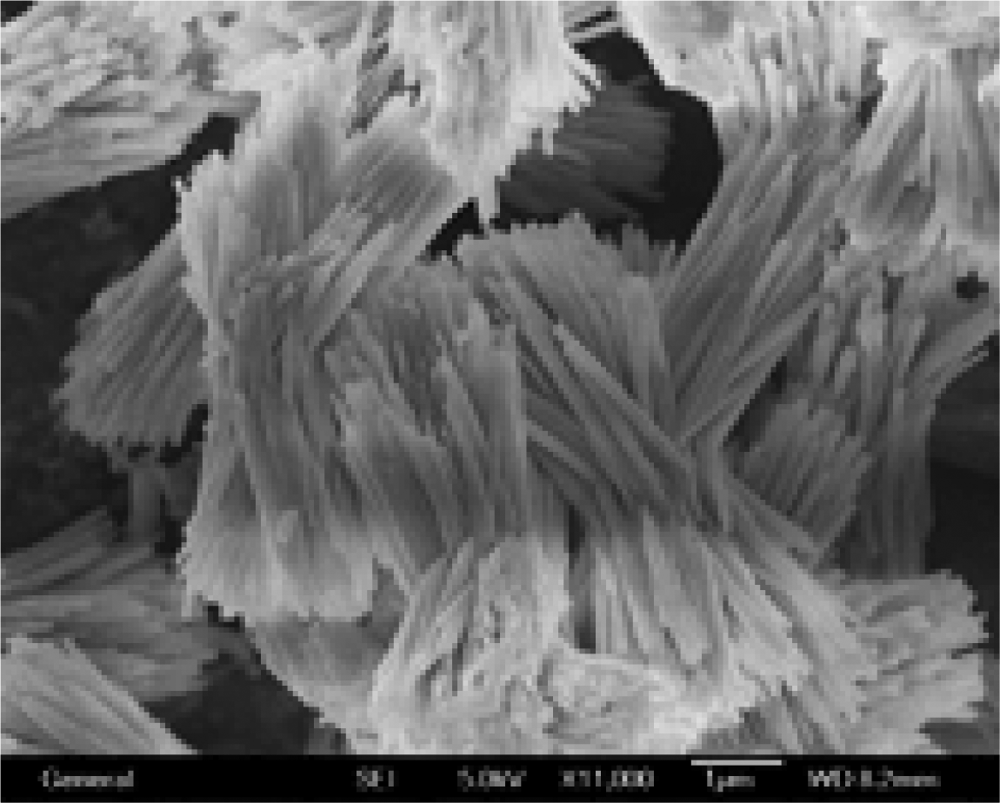
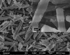

催化材料研究室的研究领域主要分为以下几个方面：
(1)微孔沸石的合成表征与催化性能的研究
微孔沸石是无机微孔晶体材料中最重要的家族，主要是由TO4 (T=Si, Al, P)四面体之间通过共享顶点而形成的三维四连接骨架。微孔沸石的优异性能诸如离子交换性、扩散与吸附性、形选性与催化活性以及它们在主客体组装化学所发挥的作用都取决于它们独特的微孔结构特征。微孔沸石目前主要应用与三大传统应用领域：1. 吸附材料，用于工业与环境上的分离与净化、干燥领域；2. 催化材料，用于石油加工，石油化工，煤化工与精细化工等领域中大量的工业催化过程的需要；以及3. 离子交换材料，大量应用于洗涤剂工业，矿厂与放射性废料与废液的处理等等。
微孔沸石的合成经历了天然沸石的合成，人工合成低硅沸石以及使用有机模板剂合成高硅沸石。有机模板剂的使用大大加快了沸石合成的发展，目前已经报道的200余种的沸石材料绝大多数都是使用有机模板剂合成的。模板剂的使用虽然带来了沸石材料合成与结构的发展，但是在工业生产中却带来了巨大的问题：首先是合成成本的增加；其次为了得到开放的微孔孔道，有机模板剂在沸石使用前必须被除去，而常见的除去方法是高温焙烧，这大大加大了工业排放，与国家的节能减排的国策是相违背的。另一方面大量的有机模板剂都是有毒有害的，这大大增加了环境污染。
肖丰收研究小组目前致力于使用绿色环保的模板剂合成沸石材料，特别是使用无有机模板剂的方法来合成通常需要有机模板剂才能合成的沸石。一些代表性的例子有：(1) 调节起始凝胶配比成功的无有机模板合成ECR-1沸石；(2)使用L沸石前驱体溶液成功的无有机模板合成ZSM-34沸石；(3)使用晶种法成功的无有机模板合成Beta沸石。
 |
Organic Template Free Synthesis of Aluminosilicate Zeolite ECR-1 ---Chem. Mater., 2006, 18 (12), 2775–2777 |
 |
Organic Template-Free Synthesis of ZSM-34 Zeolite from an Assistance of Zeolite L Seeds Solution --- Chem. Mater. , 2008, 20 (2), 357–359 |
|
|
|
Organotemplate-Free and Fast Route for Synthesizing Beta Zeolite |